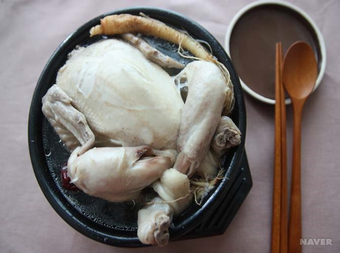
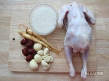
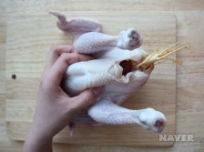
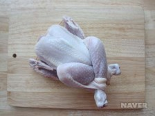
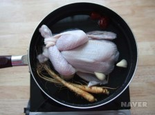
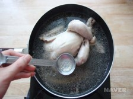

아이폰 출시순서
- 아이폰7
- 아이폰8
- 아이폰X
- 아이폰11
실시간 급상승 검색어
- 코로나 학원 휴원
- 코로나나우
- 김민아
- 7번째 사망자
- 황의조
- 시흥 코로나
- 양산 코로나 확진자
- 한국153
- 파주 코로나
- 울산시홈페이지
장애인차별금지법에 의한 권리구제 절차
행정기관을 통한 권리구제(국가인권위원회, 법무부)
- 진정접수
장애를 이유로 차별받은 장애인, 그 사실을 알고 있는 사람, 단체, 국가인권위원회 진정
- 국가인권위원회 조사
- 국가인권위원회 결정
- 시정권고
합의, 조정, 구제조치 등
- 진정인, 피진정인 법무부 장관에 전달
- 법무부 장관
불이행시 직권 또는 피해자의 신청에 의해 시정명령 중지, 원상회복 등
- 시정명령
- 과태료 부과(불이행시)
3,000만원 이하
삼계탕 만드는 법

요리법
3) 요리과정
- 찹쌀은 깨끗이 씻은 후 물을 넣고 1시간 불려 체에 밭쳐 물기를 뺀다.
- 닭은 날개 첫마디와 꽁지를 자른다. 목 껍질 안쪽의 기름을 제거해 뱃속에 손을 넣어 기름덩어리를 제거한 후 깨끗이 씻는다.
- 닭의 뱃속에 불린 찹쌀을 넣고 밤, 대추, 마늘, 인삼을 1/2분량 채워 넣는다.
- 닭의 목이 풀리지 않게 꼬챙이를 끼워 고정한다.
- 닭의 다리 한쪽 껍질에 구멍을 내어 서로 엇갈리게 다리를 꼬아 구멍에 끼워 풀리지 않게 한다.
- 냄비에 닭과 물을 붓고 인삼과 밤, 대추, 마늘 1/2분량을 넣고 뚜껑을 덮어 푹 삶는다.(약 1시간)
- 중간에 떠오르는 거품을 걷어 낸다. 먹기 전에 소금, 후춧가루로 간 한다.